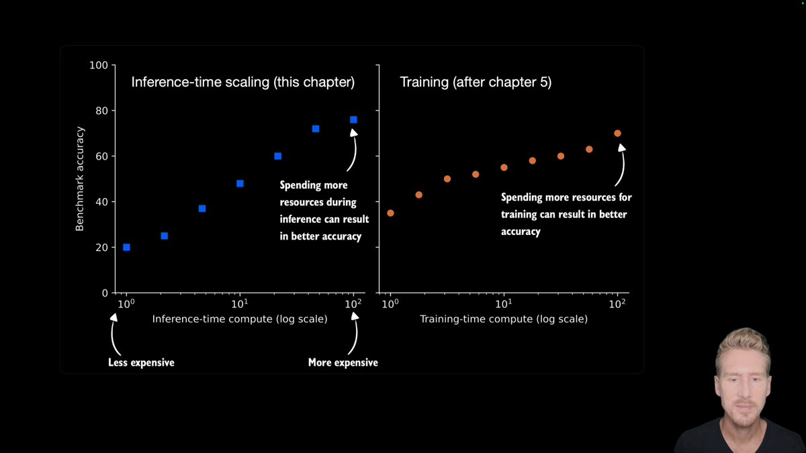
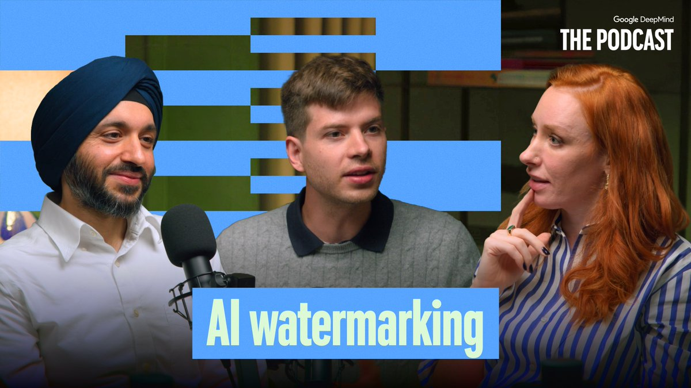
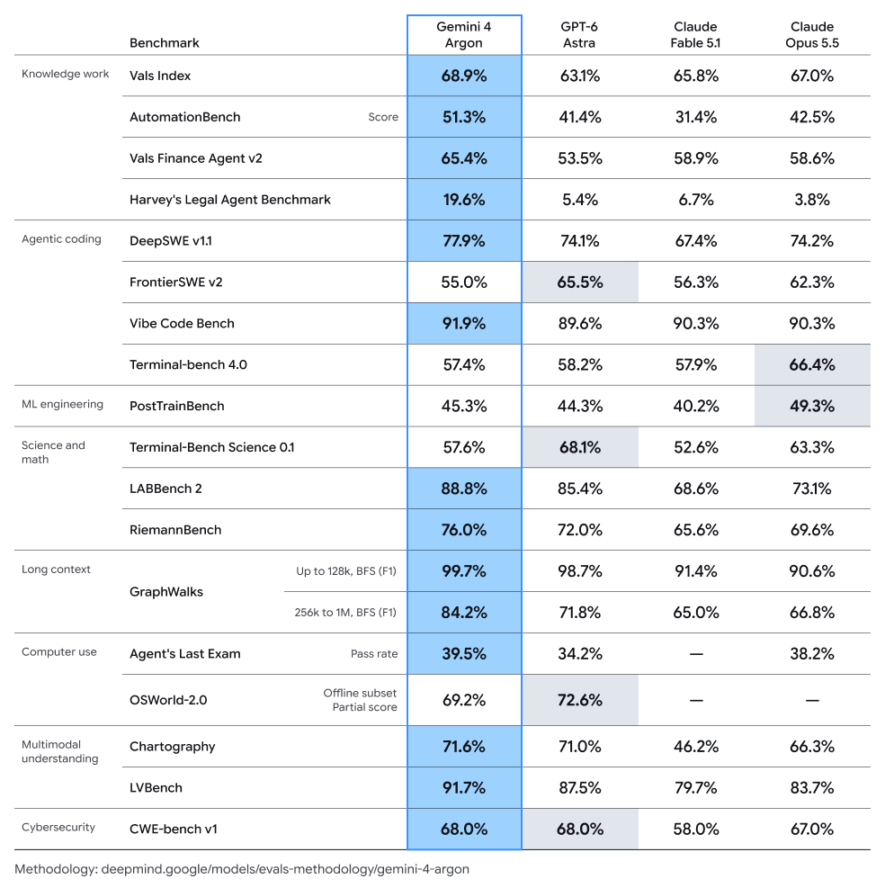
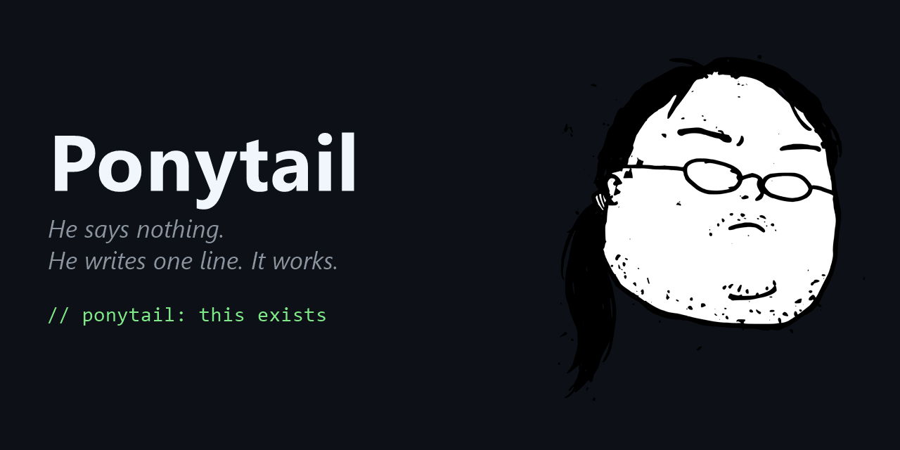
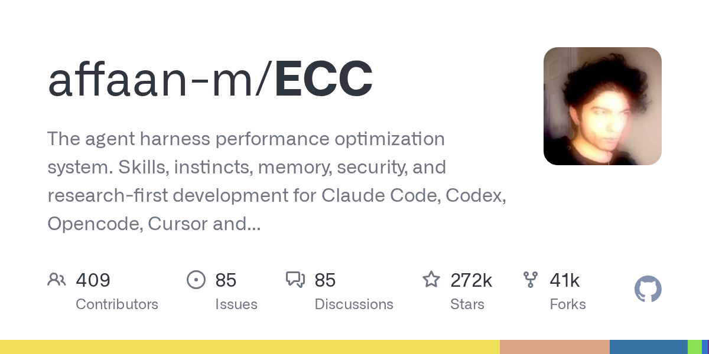

01
Anthropic 承诺投入一亿美元培训一万名工程师

Anthropic 宣布 Claude Frontier Academy，承诺投入一亿美元，计划在 2027 年底前培训一万名前沿部署工程师，并以公司自身工程师的水平为培养目标。这体现了把模型能力转化为实际部署所需的人才投入；该数字是未来培训目标，并非已完成人数。
每天一次，过滤 AI 噪音
Anthropic 宣布 Claude Frontier Academy，承诺投入一亿美元，计划在 2027 年底前培训一万名前沿部署工程师，并以公司自身工程师的水平为培养目标。这体现了把模型能力转化为实际部署所需的人才投入；该数字是未来培训目标，并非已完成人数。
OpenAI 客户案例介绍 Chatham Financial 使用 Codex 和 GPT-5.6 构建技术并改造资本市场流程，称交易验证从 30 分钟缩短到不足 4 分钟。这是具体业务场景中的厂商客户案例，不能直接推广为其他金融机构也能获得的通用效果。
a16z 发表文章讨论 AI 代为购物时谁获得收益，核心是助手与交易平台之间的关系。随着智能体介入买家和商家之间，推荐与交易入口可能影响商业价值分配。现有介绍明确了议题，但没有给出确定结论或量化市场变化，应视为投资视角的商业模式讨论。

Aleph Alpha 发布英德双语混合专家模型 Kolibri，总参数约 780 亿，激活参数约 30 亿，采用 Apache 2.0 许可开放权重，支持最高百万词元上下文。官方强调政企领域的部署控制、文档依据和可调推理强度。基准表现来自厂商评估，实际适用性仍需按业务验证。

Offrun 在 Hacker News 展示可并排运行 Claude Code、Codex、AGY 和 Grok Build 的统一工作区，强调查看工作状态、待处理请求和账户剩余容量。它针对多助手协作的协调问题，但介绍本身并不能证明代码质量或开发效率已获得提升。
Sam Altman 表示，赋予 AI 模型宗教式权威或放弃人类自身判断令他不安，并称其为真实的安全问题。这一观点引发广泛讨论，将用户依赖纳入 AI 安全议题；帖文没有宣布新的产品政策或技术措施。
Sam Altman 回应有关 OpenAI 与 Cerebras 合作的猜测，称双方关系密切，正围绕速度开展深入合作。帖文确认了合作方向，但没有披露合同条款、硬件数量、性能数据或部署时间表，因此不宜据此推断基础设施采购或替换计划。

Sebastian Raschka 发布推理模型从零实现系列第六期，介绍可验证奖励强化学习 RLVR 和组相对策略优化 GRPO，并包含实现内容。课程讨论推理模型的特征及推理轨迹，适合希望理解推理后训练方法的工程师；这是一份教学资源，并非新模型或基准发布。
Pika 表示已重新设计视频制作体验，让创作者选择偏好的生成方式，并以 Video Studio 服务希望专注创作而无需选择底层技术的用户。更新重点是工作流程和易用性，帖文未提供质量对比或定价信息，实际价值需要在具体创作任务中检验。
Sara Hooker 宣布 Invent 已通过 Adaption API 提供，开发者可用少量代码接入其数据集生成服务。这提供了将数据生成纳入开发流程的途径，但简短公告未披露价格、基准方法或生产可靠性数据。用于后训练前仍应检验数据覆盖范围和质量。
François Chollet 认为，早期基础语言模型与现代推理模型的关键差异，是从直接猜测答案转向生成求解程序或指令，而不只是使用符号工具。这是一种解释推理进展的概念框架，并非受控实验结论，可用于讨论模型是否形成可复用的解题过程。

Google DeepMind 的播客讨论来源信息和不可感知水印如何帮助辨别 AI 生成内容，范围从数字媒体延伸到生物设计。帖文介绍的是专题讨论，而非完整验证研究，反映了生成内容来源与可追溯性问题正超出传统图片和视频领域。

Runway 联合创始人 Cristóbal Valenzuela 预览 Continuum，将其描述为围绕实时视频构建操作系统的研究范式。方向是让生成式视觉交互成为界面核心，而不局限于生成成片。该预览未给出正式上市日期或性能规格，实际应用仍需检验响应速度和用户控制。

Runway 在 AI Summit 介绍开放权重世界动作模型 Praxis-1，并邀请用户申请早期访问。这将公司的生成式环境研究与物理世界中的行动系统联系起来。帖文未明确全面开放时间、许可细节或独立机器人性能评估，不能把发布介绍等同于成熟部署证明。
Runway 在 AI Summit 推出 Runway Ads，将其描述为自主效果营销引擎，并开放早期访问申请。这体现了生成式工具正围绕具体商业工作流程形成产品；公告未提供转化率、客户成效或成本数据，营销收益仍需实际评估。

以 @vivnat 发帖的 Google DeepMind 研究人员 称 Gemini 4 Argon 在能力和安全方面取得明显进展，并关注其科学和医学潜力。这是定性的积极评价，帖文没有提供基准表或部署条件；科学和医学影响应理解为期待，而非已经验证的临床或科研成果。

Ponytail 是一个 JavaScript 项目，目标是让 AI 智能体像经验丰富的开发者一样避免不必要的工作，强调少写无用代码。它体现了引导智能体减少改动和简化方案的需求，但项目描述无法证明行为稳定性，仍需通过真实任务和代码审查检验。

ECC 自称面向智能体运行框架的性能优化系统，覆盖技能、记忆、安全及研究优先的开发流程，面向 Claude Code、Codex、Opencode 和 Cursor 等工具。它体现了对模型外围执行流程的重视；采用前应审查指令和集成行为，并验证在自身代码库中的效果。